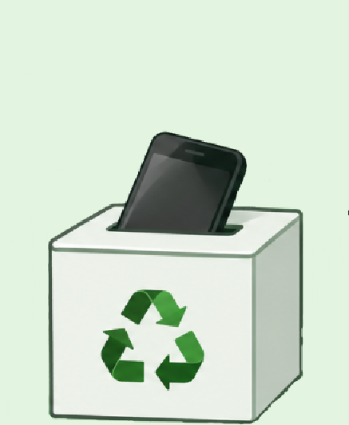

A reciclagem de equipamentos eletrónicos está a tornar-se cada vez mais importante, ajudando a reduzir o impacto ambiental causado pelo lixo tecnológico.
Mas o que acontece aos telemóveis Android que deixam de ser utilizados? Sem uma reciclagem adequada, podem contribuir para a poluição ambiental.
Objetivos da Campanha
01. Sensibilizar o público para a importância do tema abordado.
02. Informar a população sobre o problema e as suas consequências.
03. Incentivar a participação das pessoas na campanha.
04. Incentivar a população a participar na campanha de recolha de telemóveis Android.

Como participar?


Porquê reciclar?


Onde entregar?

Datas e Ponto de Recolha
Datas: De [Por defenir] até [Por defenir]
Horário: [Por defenir]
Local: PBX, junto à Secretaria
Quem pode participar:Alunos, E.E, Professores, funcionários e restante comunidade escolar.
Prepara o teu telemóvel!
Antes de entregares o teu telemóvel, segue estes passos:
1. Cópia de segurança
Guarda as tuas fotografias e ficheiros importantes.
2. Remover contas
Remove as tuas contas pessoais do telemóvel.
3. Reposição de fábrica
Repõe o telemóvel para os dados de fábrica.
4. Retirar cartões
Retira o cartão SIM e o cartão de memória.
Atenção! A reposição de fábrica elimina permanentemente os dados. Faz primeiro uma cópia de segurança. Se não souberes fazer os passos podemos ajudar.